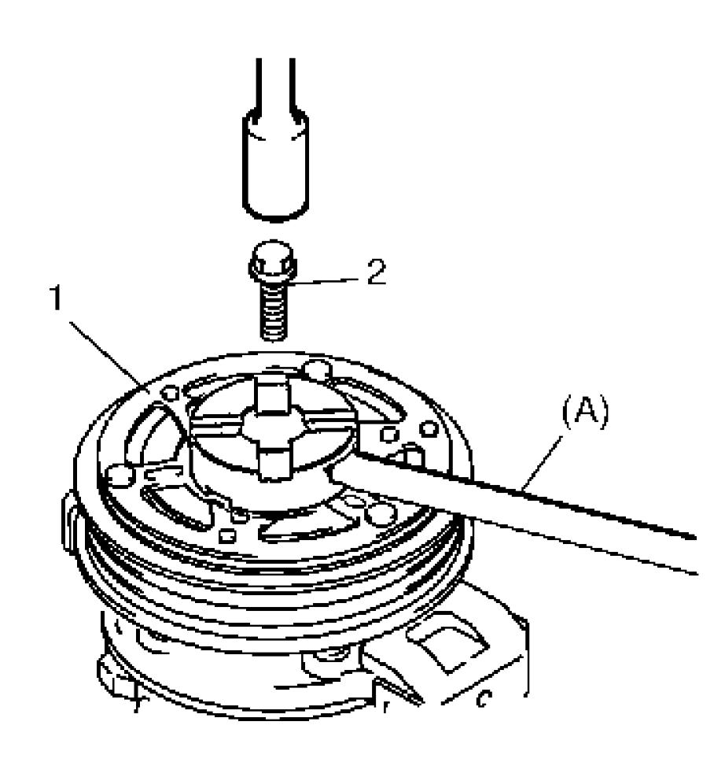
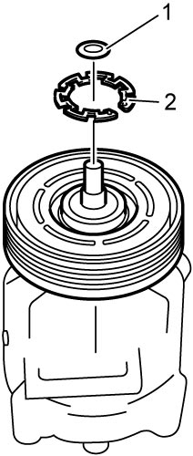
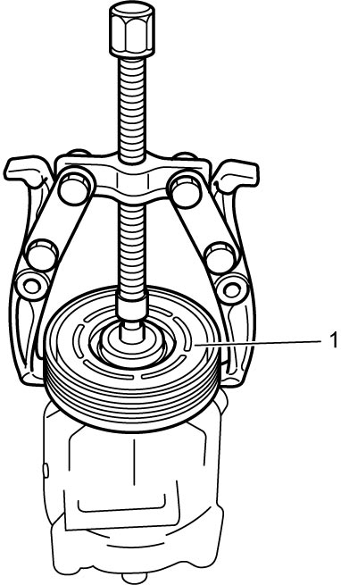
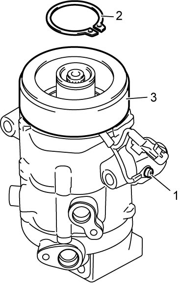
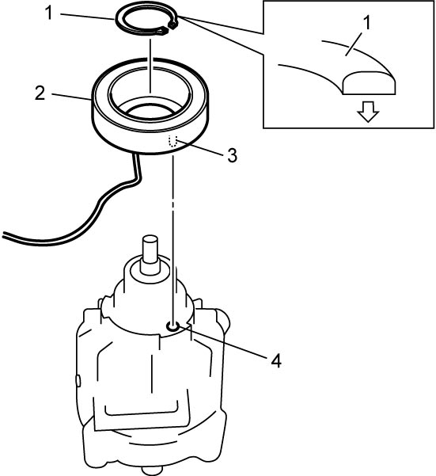
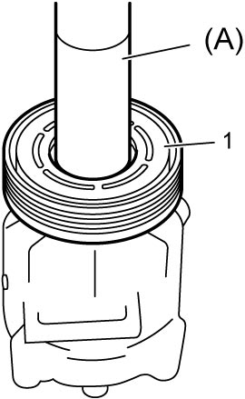
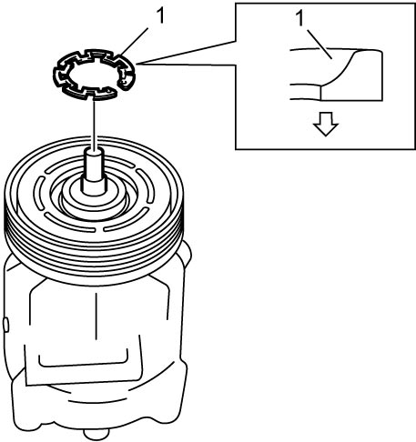
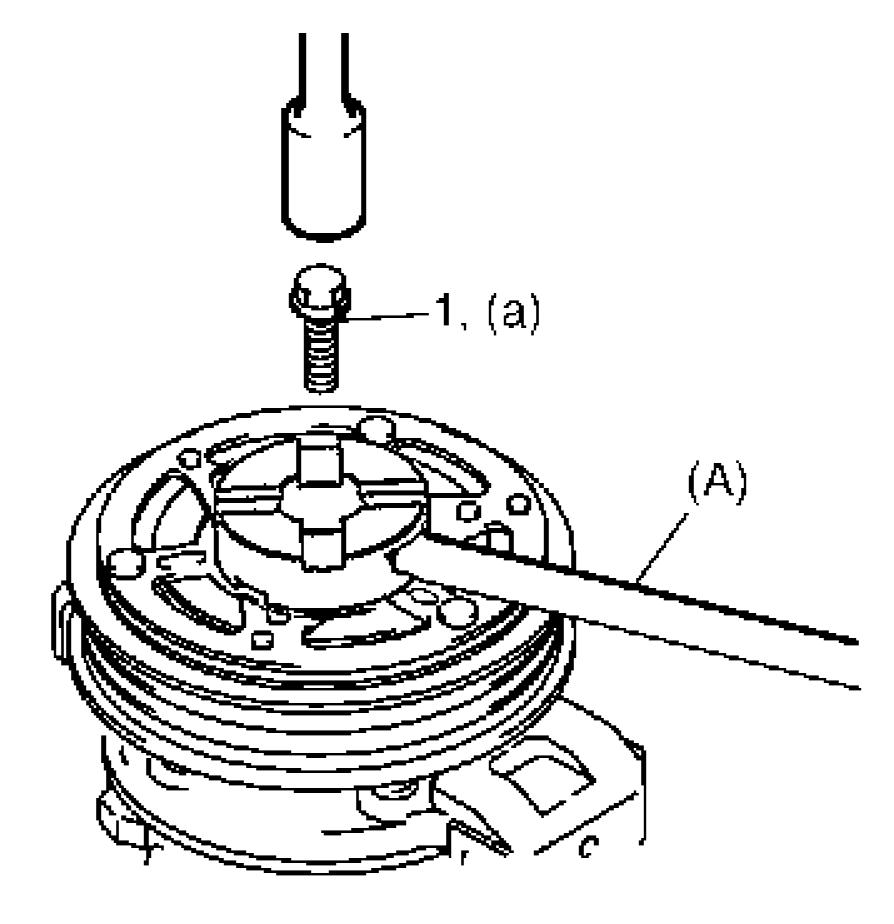
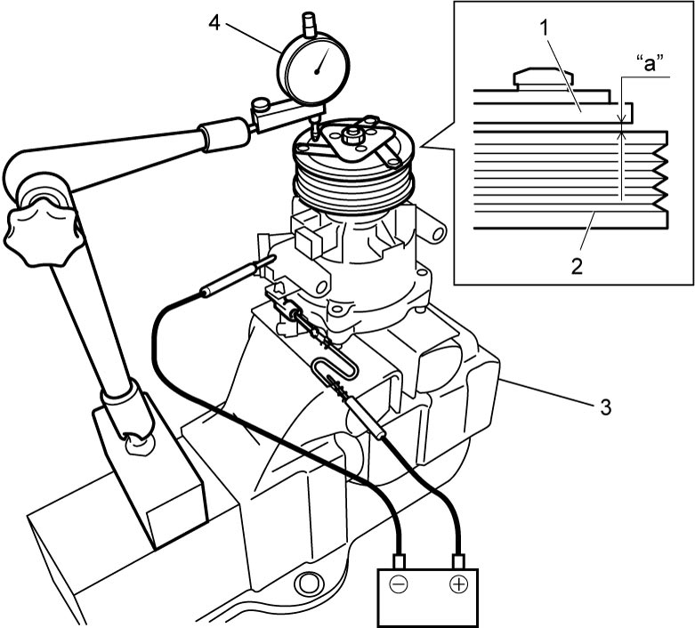

7B
| Magnet Clutch Removal and Installation (Petrol Model) |
M16A Model
K14C Model
Removal
1)Remove compressor from vehicle. 
2)Fix armature plate (1) with special tool and remove armature plate bolt (2).
3)Remove armature plate.


 "Expand image")
4)Remove shim (1) from shaft.
5)Remove circlip (2) using snap ring pliers.

 "Expand image")
6)Remove magnet clutch pulley (1) using puller.

 "Expand image")
7)Remove circlip (2) using snap ring pliers.
8)Detach magnet clutch lead wire screw (1).
9)Remove magnet clutch coil (3) from compressor.

 "Expand image")
Installation
1)Install magnet clutch coil (2) by fitting protrusion (3) of magnet clutch coil onto hole (4) in compressor.
2)Install new circlip (1), directing the plane side upward using snap ring pliers, and then insert magnet clutch lead wire screw.

 "Expand image")
3)Press-fit magnet clutch pulley (1) using special tool and hydraulic press.

 "Expand image")
4)Install new circlip (1), directing the plane side downward using snap ring pliers.

 "Expand image")
5)Install the same amount of removing shims.
6)Tighten new armature plate bolt (1) to specified torque.

 "Expand image")
7)Check clearance between armature plate (1) and magnet clutch pulley (2) as follows. If clearance is out of specified range, adjust it by putting shim(s) on compressor shaft.
a)Put compressor in a soft jawed vise (3).
b)Set dial gauge (4) on armature plate, and then adjust its pointer at 0.
c)Connect battery positive (+) terminal to magnet clutch coil lead wire.
d)Connect battery negative (–) terminal to compressor body assembly. (At this point, armature plate and magnet clutch pulley are kept in contact.)
e)Disconnect battery negative (–) terminal from compressor body assembly. (At this point, armature plate and magnet clutch pulley are not in contact.)
f)Read stroke of armature plate from dial gauge by performing Step d) – e) repeatedly. (Stroke of armature plate indicates clearance between armature plate and magnet clutch pulley.)
Standard clearance between armature plate and magnet clutch pulley
“a”: 0.25 – 0.50 mm (0.0098 – 0.0197 in.)

 "Expand image")